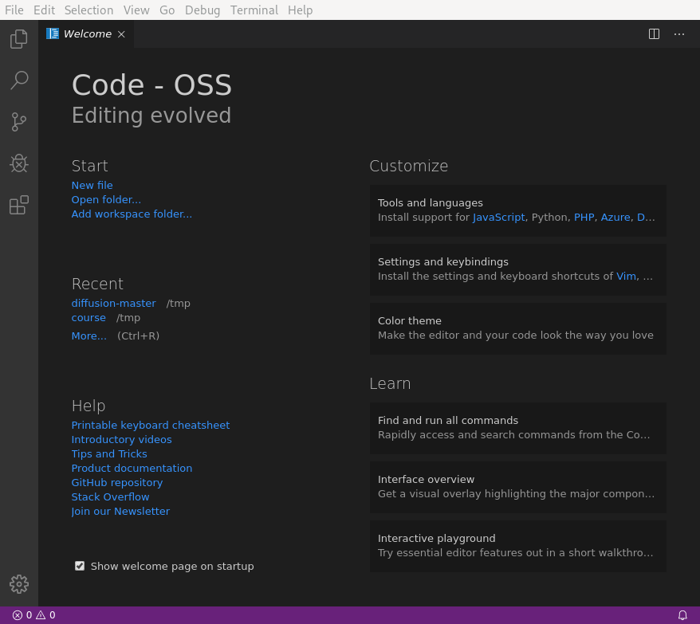
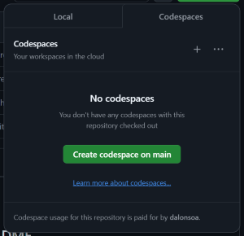
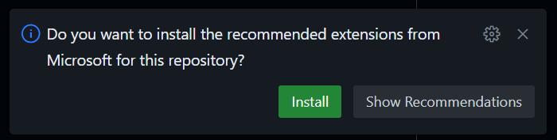
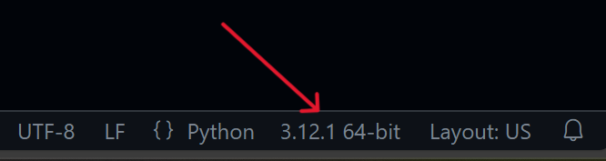
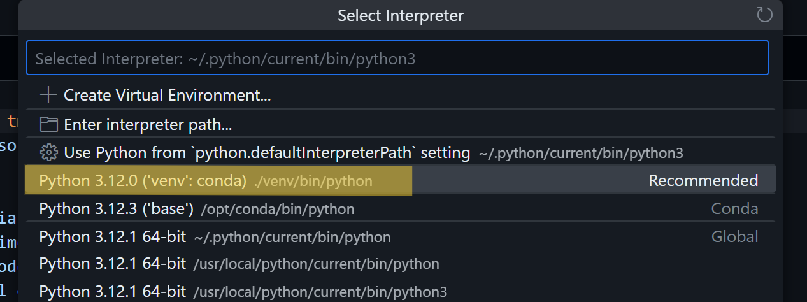

Summary and Setup
About the RSE team
Your instructors are part of Imperial’s central Research Software Engineering (RSE) team, whose role is to improve the quality, impact and sustainability of research software. While most of our work is as hired coders and consultants on research projects, we also offer a number of free services, including training courses such as this one and one-to-one code surgeries, where you can get advice and support with software development.
You can find more information about our work and the services we offer on our website.
Prerequisites
Any introductory (graduate school) level programming course
This is a new lesson built with The Carpentries Workbench.
Completing this course requires you to have access to computer with some software prerequisites installed. This course is currently being delivered remotely so please make sure you have access to a suitable computer. All attendees should download install the applications Conda, Visual Studio Code and Git.
Important!
Make sure that you have the most recent versions of Conda and VSCode. Some features used in this lesson will not work with older versions. The content of this lesson has been tested with Conda version 23.9.0 and VSCode 1.94.2.
Conda
Conda is a Python distribution and package manager. We use both features to provide the version of Python that is used in these materials and to setup self-contained environments.
You can choose to install the full version of anaconda (several gigabytes in size) or the more minimal miniconda. Either is suitable but we recommend using miniconda. If prompted, choose to install only for your user account and to make conda python the default for your system.
To test that the installation was successful follow the instructions for your operating system below.
Visual Studio Code
This course will use Visual Studio (VS) Code as an integrated development environment (IDE). You may already have a preferred IDE that you use regularly, however we strongly suggest that you use VS Code for this course and afterwards replicate the setup as you choose. If you already have VS Code installed please make sure it is updated to the latest version.
To install VS Code follow the instructions here.
You should then be able to launch VS Code and see something like:

Other languages
This course will focus on Python, but the general principles and recommendations are equally applicable to any other programming language used in research. Throughout the episodes, we will include indications on what are the equivalent tools and approaches in other programming languages, such that interested readers can check what they should use in those cases.
Some useful links to integrate the R, Fortran and C++ tools that will be mentioned during the course can be found in:
- R: RStudio is a popular IDE that has a set of tools to help you work productively with R (and also Python). If you don’t want to download or install anything, then RStudio is also available on Posit Cloud for free. Alternatively, you can use R in VSCode (Refer: R extension).
- C++: C/C++ VSCode extension, including a full tutorial on how to set VSCode to work with C++., but for Windows it might be easier to just use Visual Studio.
- Fortran: VSCode Modern Fortran extension, which integrates with the linters and formatters and the Fortran Language Server fortls.
Codespaces
This course is designed to teach you several fundamental concepts from software engineering good practices as well as helping you to setup your computer so you can keep developing your own code following these principles once the course is over. However, there are occasions when, for a variety of reasons, installing and running the above tools and those described in the course just does not work as expected.
Rather than holding up your learning or that of your colleagues, if after a few minutes trying to solve the problem things are still not working, you can run the exercises of this course in GitHub Codespaces. Once the course is over, please book a Code Surgery with us and we will help you to fix whatever issue you were facing with your computer.
To use Codespaces with the course examples:
- Go to the GitHub repository containing the code for the example.
- Click in the green
Codebutton, select theCodespacestab and click inCreate codespace on main. A new tab will open in your brlowser, launching VSCode in there, creating a suitable virtual environment and installing the dependencies.

- At some point, a pop-up message will ask if you want to install the recommended extensions. Say ‘yes’ and wait until everything is installed.

- Now, you need to select the new python environment that has been installed. Open any python file and click in the Python version number label at the bottom, right corner.

- This will display at the top of the window a list of suitable Python
environment. Select the recommended one, which should be the one that
says
('venv')or('venv': conda).

And that is all! You should be able to use this VSCode within the Codespace the same way you use it locally. You can close the tab and go back to the Codespace from the GitHub repo any time you want, and its state will be preserved for some time, but afterwards it will be shut down and any information there will be lost.